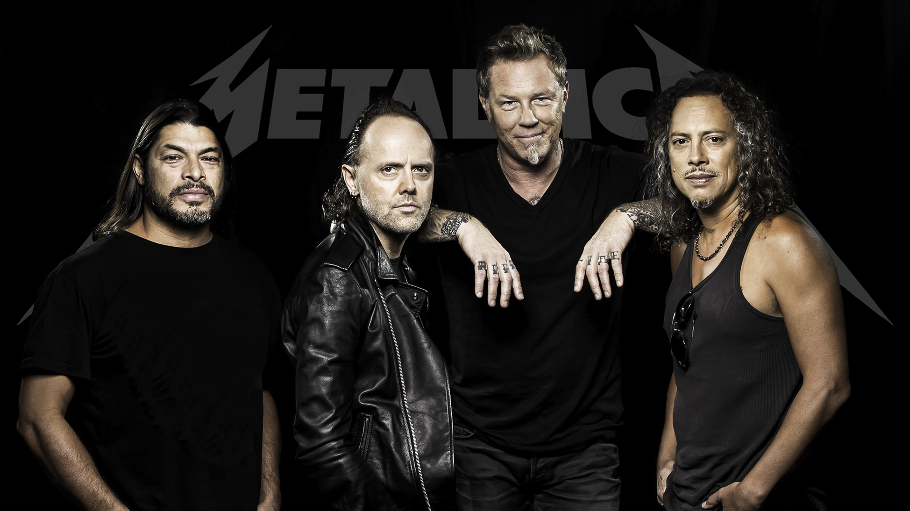

En poco tiempo Lars, James, Cliff y Kirk conviertieron a Metallica en una virtuosa banda pionera en el mundo del metal. Se adelantaron a la explosion del grunge y preparon el mundo musical de lo que vendría: en Agosto, cuando PEARL JAM debuto con TEN, en Septiembre NIRVANA con NEVERMIND, los RED HOT con BLOOD SUGAR SEX MAGIK y USE YOUR ILLUSION de los GUNS. El comienzo de la nueva y última revolución de rock estaba por comenzar... aunque METALLICA ya había tomado la delantera.
La revista Pollstar, especializada en la industria de la música en vivo, publicó que METALLICA es la "más taquillera de todos los tiempos" porque tuvo una recaudación de 1.400 millones de dólares por la venta de más de 22 millones de entradas para sus shows desde 1982 superando a grandes nombres como Guns N' Roses, AC/DC y Rolling Stones.
Los años previos a la salida del St. Anger, fueron muy dificiles para la banda. Luego de 15 años Jason Newsted abandona la formacion (las versiones de su salida son varias). Heatfield por varios meses, permanecio internado por cuestiones de salud. Solo quedaban Ulrich y Hammett (el cual tambien tuvo problemas de salud), en estas reuniones decian "creo que ya esta, se termino". Hasta que un 18 de noviembre, Kirk llega a su casa, su mujer le organizo una fiesta sorpresa por su cumpleaños, algo que lo fastidio bastante. Aunque mientras saludaba a los invitados, noto que en el fondo de la sala, mirando hacia afuera, habia un rubio alto. Era Heatfield, se habia recuperado y decidio ir a la fiesta. Luego los 3 miembros compusieron dicho disco (bastante cuestionado por los fans debido al sonido, falta de solos, etc) Bob rock el productor del disco, tuvo que tocar las lineas de bajo (hasta la incorporacion de Trujillo). Teniendo en cuenta la dificil situacion por la que paso la banda, este disco representa cierto nivel de resiliencia.
A los que compramos la entrada en Agosto del 2019, para ver el recital programado para Abril del 2020 en el campo de polo argentino, ciudad de BSAS, fue todo una aventura. En septiembre del 2019, Heatfield cae en rehabilitacion por tiempo indeterminado. Afortunadamente para el y el publico que los esperabamos ansiosos, se recupero, aunque su reincorporacion a la banda no estaba confirmada. Hasta que en diciembre/enero confirmaron la fecha establecida. Lamanetablemente en Marzo de 2020, debido a la situacion sanitaria de publico conocimineto, debimos esperar hasta Abril del 2022. Fueron 2 años y medio muy largos, cargados de sucesos inesperaros, mucha ansiedad que fue recompensada por en grandioso recital!!!